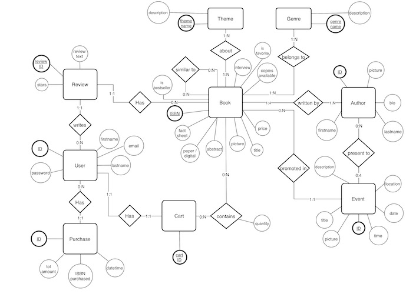

Deliverable D1
General group information
Member n. Role First name Last Name Matricola Email address 1 tbd Mattia Di Fatta 893608 mattia.difatta@mail.polimi.it 2 tbd Piervincenzo Ventrella 898604 piervincenzo.ventrella@mail.polimi.it
How did you ensure that HTML is not rendered server side?
We render web pages by means of Javascript files, attached to each HTML file, that execute on the client when the browser fetches the pages from the server.
Describe here to what extent did you follow REST principles and what are the reasons for which you might have decided to diverge. Note, you must not describe the whole API here, just the design decisions.
We think to have sharply divided between server and client components and assets and in this way we strictly followed the 'client-server' REST principle; similarly, we provided a 'uniform interface' for similar components of our system, for instance all resources of type Book are presented in the same way to the user and the interaction with them are the same. On the other hand we decided to diverge from the principle of statelessness saving session ids associated with user ids on the server in order to improve the user experience on our web application, allowing the user to stay logged in across multiple requests and browsing sessions.
Describe here synthetically, which models you have introduced for resources.
Describe with an ER diagram the model used in the data layer of your web application. How these map to the OpenAPI data model?
A Book is represented by a Swagger Book item, containing all the info of a book, when in the book topic page, or by a Swagger BookPreview item, containing just the essential info, when appearing in a list such as All Books, Written Books or Similar Books.
A Review is always represented by a Swagger Review item.
A Theme is always represented by a Swagger Theme item.
A Genre is always represented by a Swagger Genre item.
A Cart is just an array of Swagger BookPreview items.
Purchases are not implemented, so a Purchase isn't mapped with anything.
A User is represented by a Swagger User item, except in the case of a Review in with the user's first and last name (strings) are sufficient.
An Author is represented by a Swagger Author item, containing all the info of an author, when in the author topic page, or by a Swagger AuthorPreview item, containing just the essential info, when appearing in a list such as All Authors and Authors of a given book.
An Event is represented by a Swagger Event item, containing all the info of an event, when in the event topic page, or by a Swagger EventPreview item, containing just the essential info, when appearing in a list such as All Events and Event This Month
Node.js has been used as run-time environment for server side; no-standard modules installed are 'Express' as web framework,
'uuid' to generate unique ids, 'bcrypt' to salt, encrypt and decrypt passwords, 'oas-tools3' ('https://github.com/isa-group/oas-tools')
to manage OpenAPI 3.0 RESTful APIs, 'knex' to connect and access the PostgreSQL database and 'node-schedule' for Node.js routines.
The back-end has been developed using Javascript, with JQuery and AJAX.
Moreover, the server is attached to a PostgreSQL provided by Heroku.
At last, our APIs has been defined using OpenAPI 3.0 (Swagger) with a .yaml file.
Describe here:
We carefully developed each Controller and Service such that they receive only the parameters described in the OpenAPI spec and that they return JS objects structured as the returned type described in the OpenAPI spec.
We store on the server static assets such as JS scripts, CSS and HTML front-end files while dynamic data linked to the running application are stored in a relational database. The only exception is made for resources' images provided dynamically on the websites that are stored on the server (in the database we store the path to retrieve them).
We manage client sessions with cookies and uuid (Universally Unique Identifiers) to keep user authenticated and enhance the user experience of our eb application: when a POST login request occurs and it's successful we generate a uuid associated with the logged in user and we store [uuid, user-id, timestamp] in the 'sessionIds' table of our PostgresQl database. We then communicate the uuid value to the client and we make it set a cookie called JSESSIONID with that value and validity interval of 6 hours. For each authenticated requests, i.e. see the cart, add or remove a book to the cart, the client must provide this JSESSIONID cookie. Server side, we check for uuids expiration every 5 mins with a Node.js routine using 'node-schedule'. Then, when a POST logout request is received, we delete the row of the 'sessionIds' table corresponding to the user logging out and we make the client delete the JSESSIONID cookie. We are aware that this implementation of the cookie authentication is vulnerable to CSRF (Cross Site Request Forgery), but since this is a prototype we think this implementation is sufficient.
We used a relational SQL database with PostgreSQL as DBMS.
Describe here if you have found relevant APIs that have inspired the OpenAPI specification and why (at least two).
We took a look at the web pages (how they handle specific tasks, info displayed, layout of the objects etc) of Amazon.it, Netflix.it, Feltrinelli.it, Mondadori.it and Hoepli.it. We used the Feltrinelli, Mondadori and Hoepli web-sites since they are well-known book stores and we were interested in what book info they display, in which page and how. We then visited Amazon web site for ideas on how to render some pages such as reviews, ordering&shipping, contact us and the user's cart. Finally, we took a look at Netflix website to have some ideas on how to display list of objects and for some front-end elements' interaction.